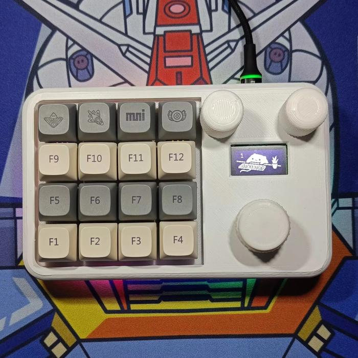
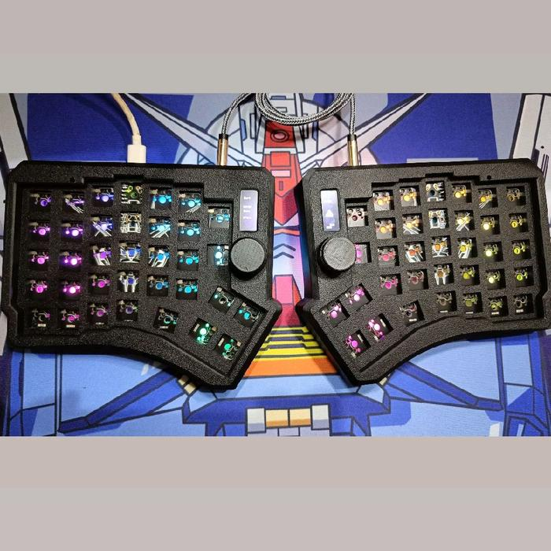

Macropad
Zeapad Encoder 14-Key Barebone
Compact barebone macropad with 14 MX hotswap switch positions and two rotary encoders for shortcuts, media control, or custom workflows.
Check on TokopediaIoT monitoring for real field problems
A demo showroom for sensor-based IoT products, dashboards, and Telegram or WhatsApp alerts for warehouses, cold storage, panels, hydroponics, and small operations.
Built for small business operations
The goal is simple: data can be read, alerts arrive when conditions are abnormal, and the owner can act without constant manual checking.
Featured Tokopedia products
Compact barebone macropad with 14 MX hotswap switch positions and two rotary encoders for shortcuts, media control, or custom workflows.
Check on Tokopedia
Barebone full programmable macropad with 16 keys, three knobs, and RGB lighting for productivity, design, editing, and control setups.
Check on Tokopedia
Mechanical split keyboard with OLED, knob, MX switch support, USB-C, and VIA/QMK support for ergonomic custom keyboard users.
Check on TokopediaProduct demos
For cold storage, material warehouses, small server rooms, incubators, and controlled environments.
Reads current, voltage, energy, and load status for small panels, pumps, machines, or business installations.
Monitors water level and pump status, then sends alerts when the tank is low or the pump runs too long.
Counts output, operating hours, simple downtime, and productivity estimates for small machines.
What buyers get
ESP32-based device with selected sensor, power setup, and enclosure plan for the use case.
Simple realtime view for key readings, device status, and recent history.
Telegram or WhatsApp notification when readings pass the agreed threshold.
Basic wiring notes, component list, setup steps, and maintenance notes.
Starter packages
Rp150-300k
Check monitoring needs, sensor points, internet access, and cost estimate.
Best for deciding whether the site is worth monitoring.Rp1-2 million
One sensor node, simple dashboard, alert, and short documentation.
Typical target: 3-7 days after component availability is confirmed.From Rp5 million
3-5 sensor points, dashboard, installation, testing, and usage handover.
Final price depends on sensor type, enclosure, distance, and installation condition.Workflow
Example: temperature rises unnoticed, pumps are left running, panels overload, or machine data is still manual.
Sensor, firmware, dashboard, and alerts are built for one point first.
Data is compared with real conditions, then alert limits and enclosure details are adjusted.
If the prototype is useful, the system can be expanded to more points.
Contact
Send the problem you want to monitor, usage location, number of sensor points, and photos of the area or panel if available.